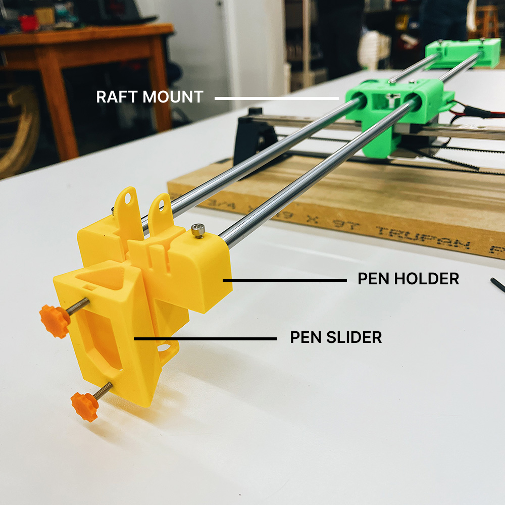

Welcome to my PS70 portfolio! Here you will find weekly progress of my digital fabrication journey.
11: computer programming
This week's assignment was to work on the most challenging aspect of our final project and create an MVP. For us, this was figuring up the Y and Z axis of our machine. We didn't end up doing any computer programming (despite the name of this week) as we had to get the mechanics down before programming the parts to move.
Testing the ink
Building the y-axis arm
We started by prototyping the y-axis with just one brush holder. The brush is meant to be inserted into the triangular-shaped pen slider component at the front and secured using the orange finger dials. One timing belt will be connected directly to the pen holder (the larger main yellow component); the y-axis will be controlled using the stepper motor located in the raft mount (the middle green component). Another timing belt will be attached to the pen slider and controlled using a micro servo (located on the other end of the rod).
Since we were missing a few bearings and rods, we weren't able to complete the prototype. However, it was still very helpful to set this up as we realized we had to make a few adjustments such as:

Modelling the pen holder
Since we need our machine to be able to hold two brushes, we started thinking about how we could incorporate this into the y-axis arm. We considered replaing the pen slider with a rotating part that could hold both brushes. We could control the rotation to dip one brush into the water bed at a time. However, we realized that this may be difficult to calibrate because the brush might move the ink as it moves in/out of the water, which wouldn't create the desired effect.